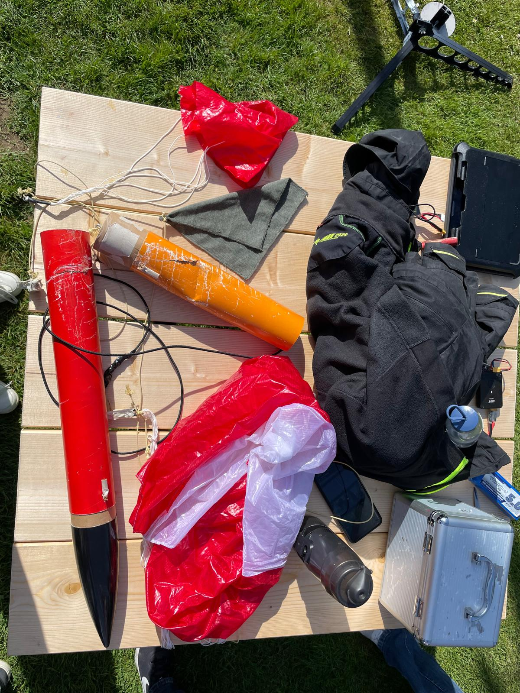

Phase II
Test-launch day
On the 28th of April, it was time for a test run of the big rocket to ensure all systems run smoothly and nothing critical is wrong. We did, of course, test the systems themselves seperately and the rocket itself was simulated very thoroughly, but we needed a combined test of every component.
For the engines, we settled on a configuration of two D9-7 and four D9-P (P meaning there is no ejection charge). Unfortunately, the company you can get them from in Germany did not have any available up until launch day, so the DLR provided weaker C6-3 and C6-P engines instead. After running the new configuration through the simulation again and adjusting the center of gravity ever so slightly for the right stability of 15.5%, we went on to send it.
Fig 1: The launch

Fig 2: The remains after the crash
After extensive analysis of what was left of the rocket, we reached the conclusion that there had been a malfunction of the engine/fin mount, causing the pressure from the ejection charge to blow it apart and lodge it in place instead of ejecting it outside. This resulted in the parachute not being deployed, which is why it crashed instead of landing safely. Also, one of the two ejection charges did not even ignite, as well as one of the regular charges. Therefore, the rocket flew in the wrong direction due to a mismatch in thrust (the only reason it flew somewhat stable is the angle of the fins) and landed in the forest without a parachute.
We called this half a success, as we figured out what was wrong before the big launch and were in a good position to fix the problems that came up.